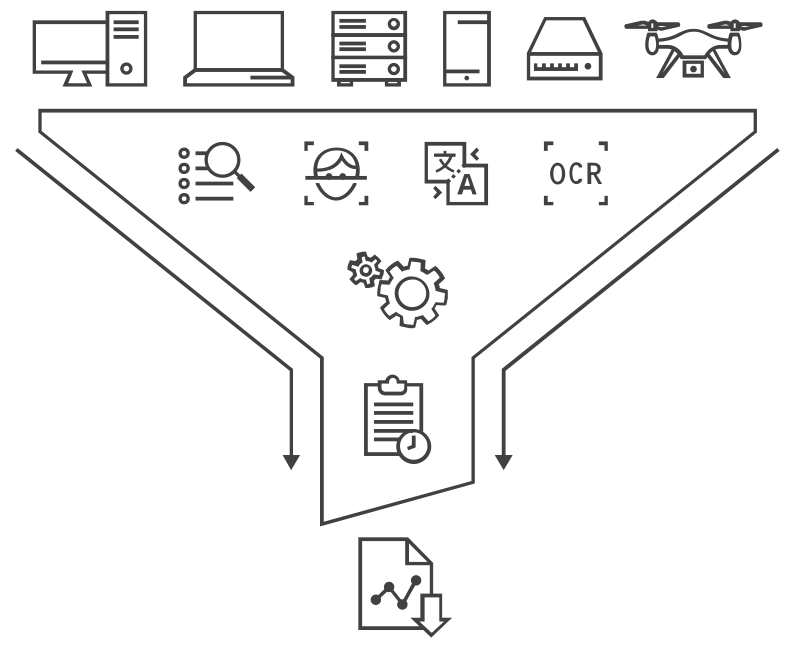

请访问原文链接：Detego Analyse 4.10 for Windows - 证据收集、分析和报告，查看最新版。原创作品，转载请保留出处。
作者主页：sysin.org
Detego Analyse
Unlock powerful analytics and court-ready reporting
释放强大分析能力与法庭级报告
Detego Analyse
通过这一中央平台整合所有取证采集数据，利用强大的 AI 和自动化功能，提供深入分析、情报和可用于法庭的报告。Detego Analyse 为调查人员提供先进的分析与报告能力，同时保持平台简洁、易用。
- 将通过 Detego 数字取证解决方案和/或第三方工具获取的所有数据集中存储于单一、安全的平台
- 使用自定义、全自动化的分析工作流
- 借助 AI 驱动的目标检测识别人员、武器、毒品等
- 通过不雅图像检测功能，自动检测图像和视频中的人脸、皮肤和裸露内容
- 使用多语言的光学字符识别（OCR）功能，从图像和视频中提取文字
- 借助 Photo DNA 与哈希匹配，快速识别与调查相关的图片
- 使用离线语言翻译功能，将从文档和图片中索引的文本翻译成英文，支持 230 种语言
- 借助行业领先的密码解密功能，轻松访问 300 多种文件类型中的关键数据
- 支持 MD5 与 SHA1 哈希匹配，兼容 Project VIC、CAID、ICAC 数据集等
Detego Analyse 被顶尖的军事和执法部门以及全球企业信任，帮助打击从恐怖主义、网络犯罪到诈骗和人口贩运的各类犯罪。即便在最严酷的环境下部署，我们依然能够交付精准结果。

收集、分析和报告全部证据的中央平台
部署选项
- 现场部署套件（FIELD DEPLOYMENT KITS）
- 移动部署单元（MOBILE DEPLOYMENT UNITS）
- 取证实验室（FORENSIC LABS）
- 固定式自助终端（STATIONARY KIOSKS）
新增功能
Detego 4.10 版本现已发布！
本次更新为 Analyse 和 Field 模块带来了重大改进，同时系统范围内的界面也进行了优化，使使用更加便捷。最新版本引入了 基于云的安装管理器 和 远程取证功能，并且 Detego 现已支持 西班牙语。
主要更新与新增功能包括：
安装管理器
- 全新的云端安装器简化了 Detego 解决方案/模块的安装流程，并提供易用的自动化功能。
Detego Analyse 更新
- 远程取证（支持通过网络安全提取数据）
- 西班牙语界面本地化（未来将支持更多语言）
- 新增 屏幕录制功能，改善报告能力
- 弹道与现场导入 简单易用
- 导入映像时提示坏扇区
- 界面优化，提高操作便利性
Detego Field 更新
- 新增 互联网历史报告功能
- 新增 附加任务标签（可优先处理任务）及 提取文件夹选项
- 支持在已恢复的数据中进行关键字匹配
- Windows 工件分析功能，可选择性包含/排除提取内容
- 可在互联网工件数据中高亮显示关键字
- 磁盘检查工作流 调整
- Windows 高级工件的新选择选项
- 西班牙语支持
- 界面优化，提高使用便利性
关于 Detego Global
Detego Global 是 MCM Solutions (MCMS) 的一个部门，MCM Solutions 是一家英国公司，为世界各地的军事、执法和企业客户开发屡获殊荣的数字取证、案例管理和端点监控解决方案。
开始试用
Detego Analyse 4.10 for Windows x64
- 百度网盘链接：
[EoD]
更多：HTTP 协议与安全

文章用于推荐和分享优秀的软件产品及其相关技术，所有软件提供免费版或试用版。内容若侵犯了您的版权，请联系作者删除。如果您喜欢这篇文章，或者觉得它对您有所帮助，亦或发现有不当之处；欢迎发表评论，也欢迎分享这个网站，或者赞赏一下，谢谢！提示：捐赠或赞赏属于自愿赠予行为，提交后即表示您对作者的支持与认可。为避免误操作，请在确认前仔细检查金额，支付完成后将无法撤销或退还。
 支付宝赞赏
支付宝赞赏  微信赞赏
微信赞赏赞赏一下
敬请注册！点击 “登录” - “用户注册”（已知不支持 21.cn/189.cn 邮箱）。 请勿使用联合登录（已关闭）。